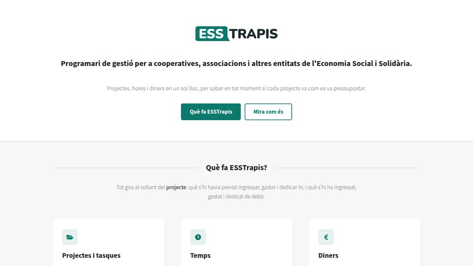

ERP
ESSTrapis
Programari de gestió per a cooperatives i entitats de l'ESS: projectes, hores, factures, tresoreria, subvencions i logística en un sol lloc. Programari lliure, en ús per diverses entitats.
esstrapis.org →